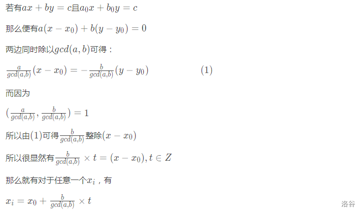
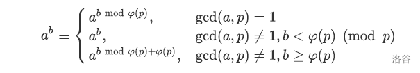
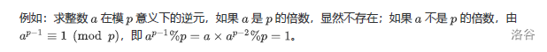
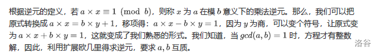
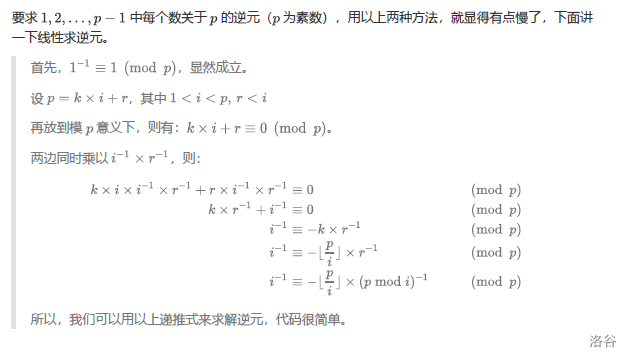
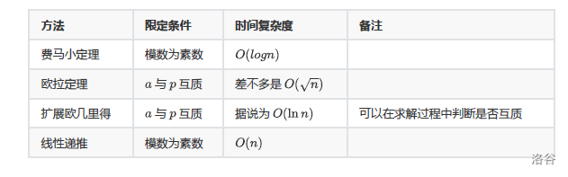

素数
素数
定义
素数（
prime number）又称质数，有无限个。素数定义为在大于
1的自然数中，除了1和它本身外不再有其他的因数，否则称为合数。
性质
任何一个大于
1的自然数都可以分解成几个素数连乘积的形式，而且这种分解是唯一的。
大于1且第一个能被该自然数整除的数肯定是该分解中最小的素因子（唯一分解定理）。两个质数一定是互质数。例如，
2与7、13与19。一个质数如果不能整除另一个合数，这两个数为互质数。例如，
3与10、5与26。1不是质数也不是合数，它和任何一个自然数在一起都是互质数。如1和9908。相邻的两个自然数是互质数。如
15与16。相邻的两个奇数是互质数。如
49与51。2和任意奇数互质
code
O($\sqrt n$)求单个素数
1 | bool isPrime(int x) { |
$O(n)$线性筛求$1-n$之间的素数
1 | int prime[MAXN]; // 保存素数 |
欧拉函数
欧拉
莱昂哈德·欧拉（Leonhard Euler ，1707年4月15日～1783年9月18日），瑞士数学家、自然科学家。1707年4月15日出生于瑞士的巴塞尔，1783年9月18日于俄国圣彼得堡去世。欧拉出生于牧师家庭，自幼受父亲的影响。13岁时入读巴塞尔大学，15岁大学毕业，16岁获得硕士学位。欧拉是18世纪数学界最杰出的人物之一，他不但为数学界作出贡献，更把整个数学推至物理的领域。他是数学史上最多产的数学家，平均每年写出八百多页的论文，还写了大量的力学、分析学、几何学、变分法等的课本，《无穷小分析引论》、《微分学原理》、《积分学原理》等都成为数学界中的经典著作。欧拉对数学的研究如此之广泛，因此在许多数学的分支中也可经常见到以他的名字命名的重要常数、公式和定理。 此外欧拉还涉及建筑学、弹道学、航海学等领域。瑞士教育与研究国务秘书Charles Kleiber曾表示：“没有欧拉的众多科学发现，我们将过着完全不一样的生活。”法国数学家拉普拉斯则认为：读读欧拉，他是所有人的老师。2007年，为庆祝欧拉诞辰300周年，瑞士政府、中国科学院及中国教育部于2007年4月23日下午在北京的中国科学院文献情报中心共同举办纪念活动，回顾欧拉的生平、工作以及对现代生活的影响。
——From 百度百科
定义
在数论，对正整数n，欧拉函数是小于或等于n的正整数中与n互质的数的数目（因此\varphi(1)=1）。此函数以其首名研究者欧拉命名(Euler’s totient function)，它又称为Euler’s totient function、\varphi函数、欧拉商数等。 例如\varphi(8)=4，因为1,3,5,7均和8互质。 从欧拉函数引伸出来在环论方面的事实和拉格朗日定理构成了欧拉定理的证明。
——From 百度百科
性质
$\varphi(1)=1$（和1互质的数(小于等于
1)就是1本身）。注意：每种质因数只有一个。若n是质数p的k次幂，$\varphi(n)=p^k - p^{k-1}=(p-1)p^{k-1}$，因为除了p的倍数外，其他数都跟n互质。
欧拉函数是积性函数——若m,n互质，$\varphi(mn)=\varphi(m)\varphi(n)$
当n为奇质数时，$ \varphi(2n)=\varphi(n) $
p为素数，若 $ n%p=0 $，则$ \varphi(n×p)=\varphi(n)×p $。
p为素数，若 $ n%p≠0 $，则$ \varphi(n×p)=\varphi(n)×(p−1) $ 。
与n互质的数都是成对出现的，且每对的和为$n$，所以大于2的数的$ \varphi(n) $都为偶数。
最大公因数
最大公因数
定义
- 一组数的公约数，是指同时是这组数中每一个数的约数的数。而最大公约数，则是指所有公约数里面最
大的一个，常缩写为gcd（Greatest Common Divisor）。 求gcd常用的方法为辗转相除法（欧几里得算法），还有一种为更相减损法。、
求解
code1
- 辗转相除法(欧几里得法)求两个数的最大公因数
1 | int get_gcd(int x,int y){ |
code2
- 辗转相减法(尼考曼彻斯法)求两个数的最大公因数
- 如果写高精度的话，用这一种会比较方便。
1 | int getgcd(int x,int y){ |
code3
- 求两个数的最小公倍数，$ lcm(aa,bb)=aa×bb÷gcd(aa,bb) $
code4
- 求多个数的最大公因数或最小公倍数，两两相求就可以了
扩展欧几里得定理
欧几里得
欧几里得（英文：Euclid；希腊文：Ευκλειδης ，约公元前330年—公元前275年），古希腊人，数学家，被称为“几何之父”。他最著名的著作《几何原本》是欧洲数学的基础，提出五大公设，欧几里得几何，被广泛的认为是历史上最成功的教科书。欧几里得也写了一些关于透视、圆锥曲线、球面几何学及数论的作品。
——From 百度百科
定义
- 对于不完全为 0 的整数 a，b，$ gcd(a,b) $表示 $ a,b $ 的最大公约数。那么一定存在整数 $ x,y $ 使得 $ gcd(a,b)=ax+by $。
code1
1 | int exgcd(int aa,int bb,int &x,int &y){ |
code2

费马小定理 & 欧拉定理
费马小定理
费马
皮埃尔·德·费马，法国律师和业余数学家。他在数学上的成就不比职业数学家差，他似乎对数论最有兴趣，亦对现代微积分的建立有所贡献。被誉为“业余数学家之王”。费马，是当今常见译法，80年代的书籍文章也多见译为“费尔玛”的情况，但“费玛”则少见。 ——From 百度百科
定义
如果$p$是一个质数，而整数$a$不是$p$的倍数，则有$a^{p−1}\equiv 1(\mod p)$
另一个形式：若$p$为素数，对于任意整数 $a$，有$a^p \equiv a(\mod p)$。
欧拉定理
- 费马小定理是用来阐述在素数模下，指数的同余性质。当模是合数的时，就要应用范围更广的欧拉定理了。
定义
在数论中，欧拉定理,（也称费马-欧拉定理）是一个关于同余的性质。欧拉定理表明，若$n,a$为正整数，且$n,a$互质，则:$a^{\varphi(n)}\equiv1(\mod p)$
其实，当m为素数时，与费马小定理相同
拓展欧拉定理

乘法逆元
乘法逆元
- 若$(a×x)\equiv 1(\mod b)$，则称 $x$ 为$a$在模 $b$意义下的乘法逆元，记为 $a−1$。
注意：并非所有的情况下都存在乘法逆元，但是当 $gcd(a,b)=1$即$a,b$互质时，存在乘法逆元。
求解
费马小定理求逆元

1 | typedef long long ll; |
- 注意：该方法的前提条件：模数为素数，且 a不是p的倍数。
欧几里得求逆元

1 | // ax+by=1 |
线性求逆元

- 注意：求逆元往往涉及大量的乘法，所以运算的时候一定要注意是否需要用到 long long。
总结
